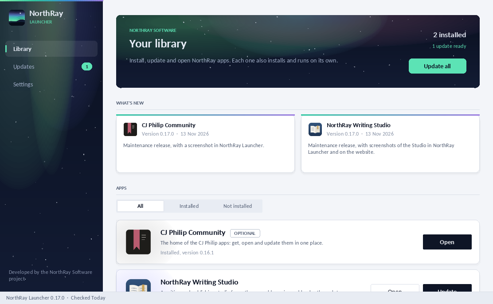

NorthRay Software
Desktop software for writing and publishing books.
NorthRay Software makes Windows apps for creative work, starting with NorthRay Writing Studio for authors. NorthRay Launcher installs, updates and opens them in one place. They work offline, and none of them needs an account.

- Free to useNo subscriptions, paywalls or deliberately restricted features. Free software shouldn't mean inferior software.
- Your work is yoursLocal storage, offline use and established file formats, so you're never trapped inside an app.
- Honest about progressUnfinished features aren't advertised as complete. Each app says plainly what it can and can't do yet.
Applications

NorthRay Writing Studio Preview
A writing and publishing studio for authors: worlds, series and books, through to finished editions.

NorthRay Browser Preview
A web browser for Windows in the NorthRay look, with creative tools planned.

NorthRay Files Preview
A file manager for Windows in the NorthRay look, with creative tools planned.
Also in NorthRay Launcher, as an optional download: CJ Philip Community, with apps associated with author and broadcaster CJ Philip. More about CJ Philip.